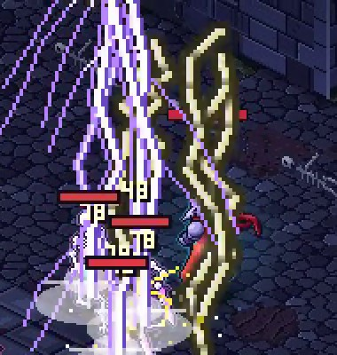
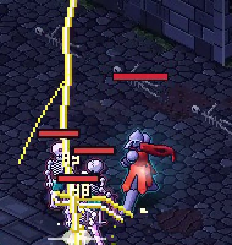
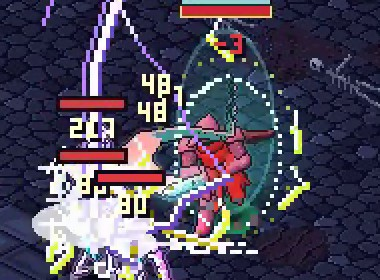
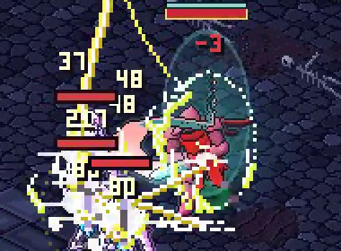
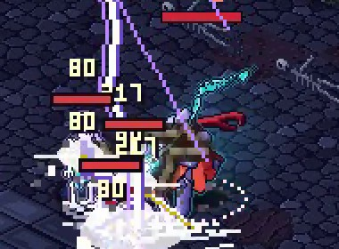
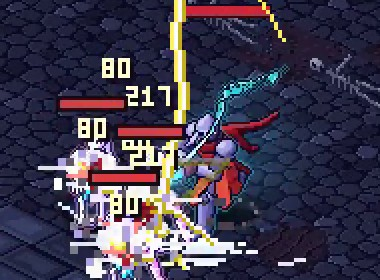

You asked: “Okay, I want you to look at all lightning in the game and see if it's the gold bolts or Lightning's bolts. Same with fire, same with ice, same with poison, same with power. I want consistency with my damage. The damage melds are a little different so they can have a different flair if it seems applicable.”
I went through every place your damage shows: your words, Rank II words, all the melds, the five classes' moves and talents, the uniques, and monsters carrying your words. Lightning's own bolt is white at its heart with yellow-gold edges, so gold in itself is right. The wrong ones were bolts the new melds drew in their own colours, and violet bolts they borrowed from Thunder. Everything below sits behind the same switch as the melds' page, off until you say yes.
Lightning
FixedNine new Lightning melds struck with Thunder's violet bolts: Static, Jolt, Fulgurite, Quicksilver, Conduit, Overcharge, Seeker, Tempest and Stormfront. That covered their hits, their storms, and monsters carrying them. The damage melds' look took any meld's arc, and for one it didn't know it fell back on Thunder's violet. Now they strike with Lightning's own bolt.
FixedTheir own thick bolts in their own colours, like Jolt's gold ones, are Lightning's own bolt now (on the melds' page).
Already rightThe Lightning word, its storm, Rank II Lightning, the Mage's lightning talents, the Brawler's arcs, and monsters carrying Lightning.
Own flairThunder, Wildfire, Hailstorm and Contagion (the damage melds) and Chain Reaction (Volatile's lightning meld). Forking keeps Lightning's white-gold heart with the twins' sea-green after-image.
Your callThe Tinkerer's tesla coil and her energy Contraption deal lightning damage in her cyan.
Jolt, before: the filmJolt, after: the film

Jolt, before

Jolt, after

Static, before

Static, after

Conduit, before

Conduit, after
Fire
Already rightThe Flame word's flames, fireballs, burning ground and burning monsters; the Mage's fire talents; the Warlock's fire blasts; the uniques' fire; monsters carrying Flame.
MatchedThe new Fire melds drew their fire in a near copy of Flame's colours. Now they use Flame's exact colours.
Own flairEruption, Scald, Wildfire, Fumes and Powderkeg; Cauterize and Fervor keep fire's colours.
Your callThe Warlock's own burning, his hellfire, is cyan, though it is fire damage.
Ice
Already rightThe Frost word's ice bursting up, shards, snow, rime, frozen and chilled monsters; the Mage's frost; monsters carrying Frost.
MatchedThe new Frost melds' ice was a shade more cyan than Frost's. Now it is Frost's own blue. Flash Freeze no longer draws a second ice block over Frost's own, and Icebreaker's shatter is Frost's own breaking ice (on the melds' page).
Own flairAvalanche, Scald, Hailstorm, Frostbite and Shatter; Shiver and Rime Ward.
Poison
Already rightThe Poison word's bubbles, splash, clouds and poisoned monsters; the Ranger's Venom; monsters carrying Poison. The poison melds' own twists are in greens close to Poison's.
FixedMire's bubbles are Poison's own (on the melds' page).
Own flairBlight, Fumes, Frostbite, Contagion and Rupture; Siphon.
Power
Already rightPower's own look is the heavy blow: a heavier ring, the screen's kick, and its hot white to red. It plays for every Power word and every meld with Power in it.
Own flairEruption, Avalanche, Thunder, Blight and Demolition; Sunder.
A bug found on the way
With a new Volatile meld behind a move (Cluster, Detonator, Mayhem, Minefield, Timebomb, Hair Trigger, Blastwave, Bloodbloom, Quickfuse, Concussion), the rune it leaves was not drawn going off at all. The damage melds' look took its blast and drew nothing. With the switch on, it goes off in Volatile's own violet blast.
Left as they are
Bosses' and monsters' own attacks keep the enemy's pink and gold, by your rule. The Mage's crackling arcs are her own power, not lightning damage.
Your call
Two looks are a class's own colour on a damage type. The Tinkerer's lightning is cyan: I'd make it Lightning's own bolt and keep her cyan on her machine. The Warlock's hellfire is cyan: I'd keep it, since it's his own kind of fire. Tell me in the chat, and whether to switch all of this on.